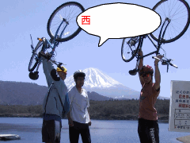
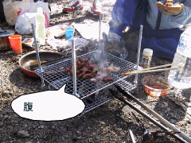

カヌースクール | ２００１年４／１４ |
| 下田市外浦海岸でシーカヤック講習にと参加 参加者：キッカー、シュガー、らくさん （らくさん談） 朝の９時から講習開始。 1時限目は入門講習。ビーチにて、装備や道具の名称説明、パドル（漕ぐためのハネ付の棒）の使い方などを聞く。 ２時限目は海上講習。ライフジャケット・ウエアーなどを装備していざ海上へ。波が小さい所だったので、「思っていたより簡単じゃん」と思った。 ３時限目は、「楽に前進するための技術」を受講。バトルで「しっかり水を掴むように」などの説明を聞き、頭では「なるほど」と理解したつもり。 ４時限目には試乗会。ディーラーさんがカヌーを提供してくれて自由に乗れるので、今回は3時限目講習の実践のつもりで。水を掴むように漕ぐのって難しいなー。と、試行錯誤していると、体のバランスを崩してカヌーと一緒に逆さまに！！ 「どうしよ、どうしよ」とパニックになりながら、カヌーから脱出。周りの方に手伝ってもらいながら、なんとかカヌーに再起上。「あー、助かった」。（ここで携帯を海に落とす。(; ;)ホロホロ ） シュガーは日曜予定ありで、電車で帰途へ。 キッカー・らくさんは民宿に戻って、食事の時間まで1時間ほど仮眠。「周りがうるさいなー」と思いつつ、気が付いたら熟睡してた。夕食は、ちょっとした宴会料理。 そして、PM７時からビンゴゲーム。とにかく景品が豪華なこと、バトル・中古カヌーなどが飛び出して、ビックリ。しかも、当たらなかった人にも特製Ｔシャツをくれる辺りの演出には感激。（当然私はＴシャツ・・・・・・） でも、すごく楽しかった。 | |
西湖サイクリング | ２００１年 ４／１５ |
|  富士山をバックに | 西湖でサイクリング 参加者：マーシー、キッカー、ベッシー、らくさん 日差しが気持ちいい日曜日、自転車を車に積んで富士五湖の一つ西湖へ出発。前日伊豆でカヌーをしていた、キッカー、らくさん、そして東京から来ていただいたマーシーと合流。 ママチャリしか持っていないキッカーが自転車を近くで借りて、西湖一周に出発！ 西湖は一周が１３㌔程度なので快適に走れる。 |
| なぜか西湖の周りを走っている写真がないが、富士山がきれいで風も気持ちよくあっという間に走ってしまいました。 途中から整備された遊歩道に入り（もちろん歩行者に注意しながら）木漏れ日の中を快適に走る。ここは、木のチップがひいてあり平坦で走りやすい。 |  森の中を疾走するキッカー |
 ちょっとわかりにくいかな | 左の写真はそんな道の中を疾走する「マーシー」楽しそうですね〜〜。 自転車がどっちかというと、ちょっとオンロード向きだったのでオフはちょっと大変。でも、道はいいのでご機嫌です！ この後に、道ばたにある風穴（らしいもの）に、寄り道。すこし洞窟探検。 |
| 少し遅い昼食を駐車場脇でとる。炭火でベーコンと「こてっちゃん」を焼いて、パンに挟んでいただく。これがうまい。自然の中で食べるのはサイコーにうまい。 その後、近くの温泉に入って気分をリフレッシュさせ、日頃の疲れをいやし、帰路についた。 |  おいしく焼けてるよ |